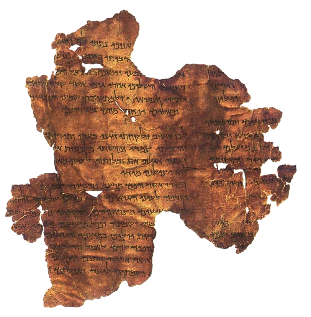

אודות הגופנים
לצפיה במסמך, סמן המסמך הרצוי בעכבר, והקש פעמיים על הכפתור השמאלי של העכבר.
להורדת מסמך, סמן המסמך הרצוי בעכבר, לחץ על הכפתור הימני של העכבר ובחר - "Save link as" .

הכתב הקדם כנעני
הכתב הכנעני (פניקי) מארון הקבורה של חירם מלך גבל
הכתב העברי הקדום - לוח גזר
הכתב העברי הקדום - אבן מישע
הכתב העברי הקדום - כתובת השילוח
הכתב העברי הקדום - חרסים מלכיש
הכתב העברי הקדום - ספר ויקרא מגילות ים המלח
הכתב העברי השומרוני
הכתב הארמי המוקדם- כתובת בר רכב
הכתב הארמי מהמאה ה-7 לפנה"ס. כתובת "גזנה"
הכתב הארמי המלכותי - פפירוסים מהאי יב (אלפנטין)
הכתב העברי המרובע החשמונאי - מגילת ישעיהו, ים המלח
הכתב העברי המרובע ההרודיאני - פשר חבקוק, ים המלח
הכתב העברי המרובע -מרד בר-כוכבא
הכתב העברי המרובע התקופה ביזנטית - כתובות בית שערים
הכתב העברי המרובע המאה ה-10 לספירה - כתר ארם צובא
כתב סת"מ אשכנזי
Yoram Gnat (יורם גנת)